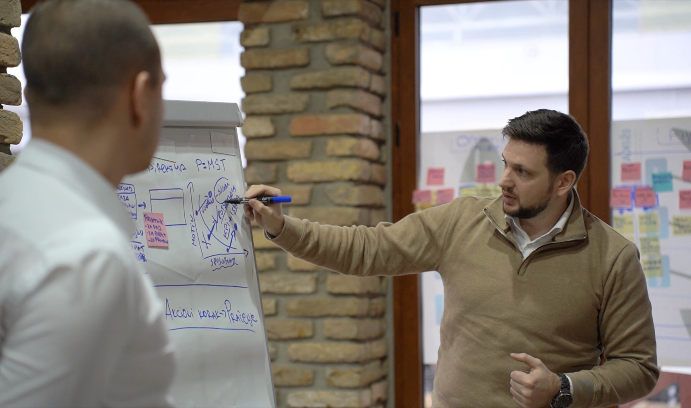

Više klijenata bez još zaposlenih.
Sve to ugrađujemo u tvoj biznis. Pre nego što zaposliš još jednog čoveka, proveri da li tvoj sistem koristi kapacitet koji već imaš. Pokazujem gde posao čeka, uklanjamo usko grlo i postavljamo sistem koji radi i kad nisi u svakom razgovoru.
30+ firmi je poraslo uz naš sistem
Upitnik traje 5 minuta. Plan za narednih 30 dana stiže ti na mejl.
Posla ima. Problem je što sve prolazi kroz tebe.
Ovo su rečenice koje čujem od skoro svakog vlasnika na prvom razgovoru. Retko ih neko kaže naglas pred timom.
Novi čovek neće automatski rešiti problem kapaciteta.
Ako posao čeka tebe, novi čovek će čekati zajedno sa ostalima. Prvo treba videti gde se kapacitet gubi: u čekanju između koraka, u doradama, u odlukama koje samo ti možeš da doneseš.
Novi zaposleni, 4 meseca
1.500 € mesečno, pre nego što znaš da li je problem uopšte bio u broju ljudi.
Mapa kapaciteta
Vidiš gde posao čeka, šta je usko grlo i koji su prvi potezi za narednih 6 do 9 meseci.
Ovu računicu je napravio Dušan iz Floumate-a, agencije za automatizacije. Posle radionice je zaključio da mu novi čovek ne treba i primio je dva nova klijenta sa istim timom.
Prvo mapa. Pa jedno usko grlo. Pa sistem.
Ne krećem od alata ni od gotovog šablona. Krećem od toga kako posao stvarno teče kroz tvoje ljude, od prvog upita do preporuke.
Mapa celog toka
Mapiramo korake, uloge, alate i probleme. Merimo koliko koji korak traje i koliko posao čeka između njih. Vidi se i šta sve prolazi kroz tebe.
Jedno ograničenje, tri prioriteta
Od svih problema biramo onaj koji drži sve ostale. Dobijaš Plan rasta za 6 do 9 meseci: tri prioriteta i spisak onoga što sada ne radiš.
Sistem koji tim drži
Pravila isporuke, jasne odgovornosti, granice odluka, alati i automatizacije tamo gde proces već radi. Plus nedeljno praćenje, da promena ne stane posle šest nedelja.
Tri koraka, ti biraš gde ulaziš
Svaka saradnja počinje mapom. Bez nje nema plana koji ima smisla.
Mapa kapaciteta
Radionica na kojoj mapiramo tvoj ceo tok posla. Posle nje dobijaš izveštaj i Plan rasta za 6 do 9 meseci.
Za vlasnike koji hoće da znaju gde se gubi kapacitet pre sledeće odluke.
Operativni sistem rasta
Posle mape postavljaš sistem uz moje vođenje: pravila isporuke, odgovornosti, alate i ritam praćenja. 4 meseca.
Za vlasnike malih timova i solo vlasnike koji rade online i hoće da sprovedu promenu sami.
Operativni sistem rasta 1:1
Isti sistem, ali promenu sprovodim ja sa tvojim timom. Ti učestvuješ nekoliko sati nedeljno, za odluke i odobrenja. Oko 6 meseci.
Za vlasnike sa timom od 5 do 15 ljudi koji nemaju vremena da vode promenu.
Isti tim. Više klijenata. Manje vlasnika u svemu.
Pusti ih da ti kažu sami
Ono što radim tebi, prvo sam uradio sebi.
Moja firma je mogla da isporuči dve i po radionice mesečno. Od zahteva do izveštaja prolazio je 31 dan, a izveštaj sam mogao da napišem samo ja. Usko grlo moje firme bio sam ja.
Kad sam to mapirao kao što mapiram klijentima, izrada izveštaja je pala sa 10 na 5 dana, a kapacitet je skočio sa dve i po na pet radionica mesečno. Rešile su ga čekliste, šabloni i još jedna osoba obučena za pregled, a ne više mog rada.
Pre toga sam godinama vodio isporuku i timove u auto industriji, IT-ju i gaming industriji, uključujući Tetris tim. Trener sam Mokrogorske poslovne škole i licencirani Lean Change trener. Danas to iskustvo koristim za vlasnike koji su zarobljeni u sopstvenoj firmi.
U kojoj je fazi tvoj biznis?
Broj ljudi nije faza. Firma od 15 ljudi može da bude u fazi u kojoj klijenti i dalje dolaze na talase. Upitnik ti kaže gde si sada, šta te tačno drži i koja su tri koraka za narednih 30 dana.
- Faza rasta tvog biznisa i njena ključna kočnica
- Plan za 30 dana u PDF-u, na mejl
- Videi koje vredi pogledati baš za tvoju fazu, redom

Ono što me najčešće pitaju
Sa kim radiš?
Sa vlasnicima digitalnih uslužnih biznisa u kojima isporuka ima više koraka i primopredaja: softverske i gaming agencije, agencije za automatizacije i marketing, online edukacija. Radim i sa solo vlasnicima koji rade online i hoće da rastu bez haosa.
Nemam problem sa upitima, nego sa isporukom. Da li je ovo za mene?
Jeste, upravo za tebe. Ako ti je glavni problem to što upita nema, reći ću ti to na pozivu i uputiti te na pravu osobu. Nema smisla pojačavati prodaju ako isporuka ne može da primi.
Da li ćeš mi reći da ne zapošljavam?
Ne. Nekad je novi čovek pravi potez. Razlika je što ćeš odluku doneti kad vidiš gde se kapacitet gubi, a ne zato što si umoran.
Moram li da kupim nove alate?
Ne. Alat dolazi posle procesa. Gde god može, koristimo ono što već imaš. Automatizujemo samo ono što je jasno i što se ponavlja.
Koliko mog vremena ovo traži?
Mapa kapaciteta: jedan radni dan plus kratka priprema. Grupni program: 3 do 5 sati nedeljno. Program 1:1: nekoliko sati nedeljno, za odluke i odobrenja.
Šta se dešava na besplatnom pozivu?
Razgovaramo 30 minuta: gde si sada, gde želiš da budeš za godinu dana i šta te koči. Na kraju zajedno odlučujemo da li ima smisla da radimo i u kom obliku. Bez pritiska.